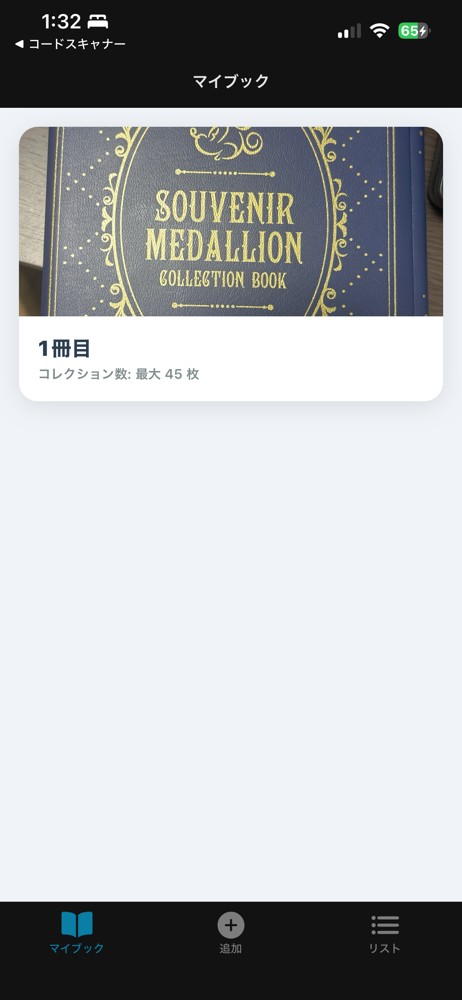
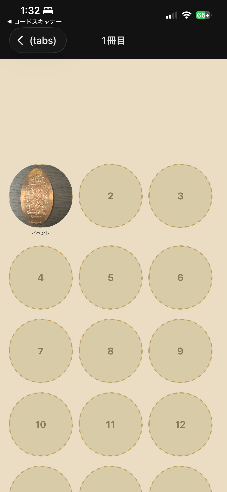
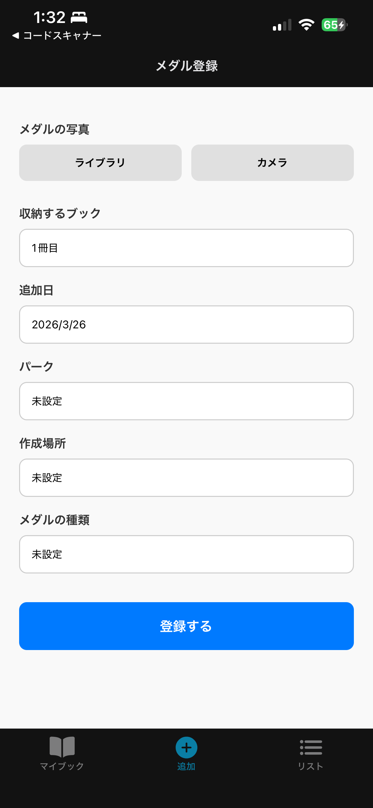
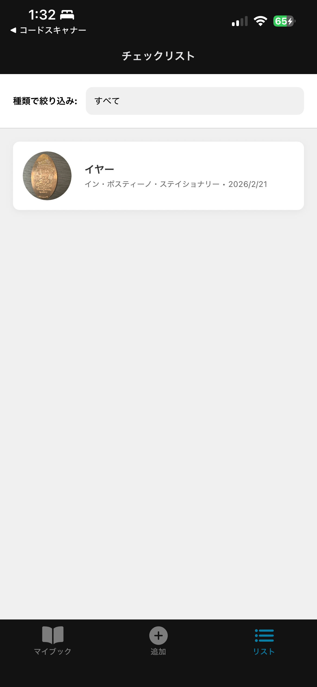

Disney Medal Tracker
ディズニーのスーベニアメダルを管理・コレクションする個人用iOSアプリ。

開発の背景と目的
テーマパークで集めたスーベニアメダルが手元に溜まっていく中で、「どのメダルをいつ・どこで手に入れたか」を効率的に管理し、実際のメダルブックを見ているかのようなワクワク感を楽しめるアプリが欲しいと考え、開発を行いました。
主な機能と工夫
・45枚収納のメダルブック：実際のコレクションブックを模したUIを採用し、表紙画像のカスタマイズ機能も搭載しました。
・直感的な登録フロー：iOSのActionSheetを活用し、「イヤー」「イベント」などの種類や、「ペニーアーケード」などの作成場所をスムーズに選択できるようにしました。
・後から編集・空き枠予約：メダルの写真がその場になくても枠だけを確保し、後から写真を追加できる柔軟な設計にしました。
スクリーンショット


